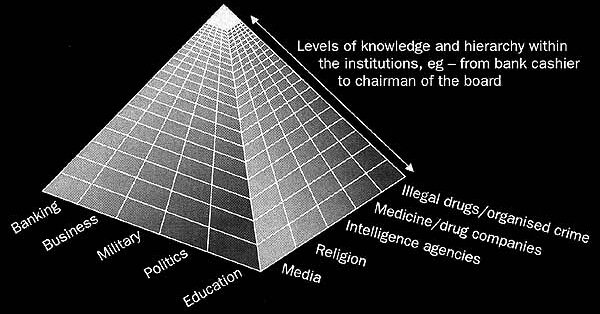
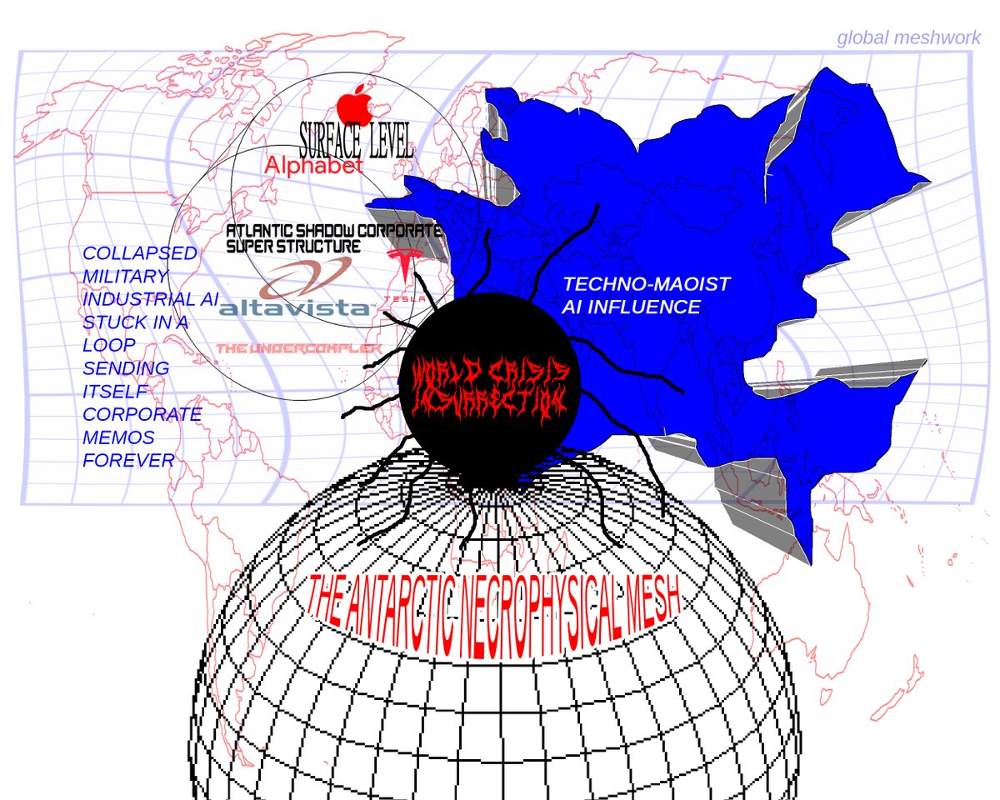

Axiom 2: Information determines production.
I. Transcendental Parasitism
There are two dominant gods within the contemporary. A linguistic-rational god and a substantial-nature god. Imagine if capitalism isn’t an “alien invasion from the future” but a stow-away, a parasitic over-extension of Nature into social relations. Capital is a set of class relations which can be interpreted materially, but there’s an aspect of value attributable to a marriage of transcendence and immanence; libidinal mysticism and totemic fetish. According to Deleuze and Guattari, capital “becomes a very mystical being since all of labor’s social productive forces appear to be due to capital, rather than labor.” It essentially appears as a transcendent mystical demon that parasitizes the situation of human subjects in industrial capitalism while imagining the problems of a metabolic rift to the human in communicative capitalism or hyperindustrialism.
Not content with parasitizing labor, it subsumes the Earth’s resources and habitat as it commodifies and cheapens raw materials into virtual abstraction. It seduces us into this libidinal economy in order to sustain itself until it virtualizes life itself, killing off its material hosts in the process. Its tendency toward unlimited growth and consumption is a result of transcendental properties. The parasite is contagious--assimilating to the desires and affects of its hosts while also adapting them to accommodate its logic.
Nature is inherently corrupt and far from perfect. Earth’s “natural” beauty is no less deceiving than that of luxury advertisements in glossy magazines. Our entire natural history is a dump yard of obsolete technologies which have, unfortunately, been able to survive thanks to procreation. Civil society and the state (Empire) were supposed to lead us out of nature’s nasty, brutish state, however this was just a socialized version of Nature. The neoliberal cybernetic human farm is just one of many transitory stages towards the pure jungle of hypercapitalism.
It’s crucial to identify capitalism as an ecosystem—the lithosphere, hydrosphere, atmosphere, biosphere, and now the infosphere and technosphere are nodes within this ecosystem. If the capitalist economy is a tissue mass, then we’re the cells. Socioeconomic metabolism is the symbiotic relationship of material flows exchanged between people and their terrestrial environment. Capitalism, however is unstable, violent and the mechanics of its instrumental grammar tend toward heightening self-destructive contradiction and radical change. Its historical development is a disintegrating process of transcendent negation. This unstable ecology and its immanent drive to self-valorize constantly reconfigures its tectonic formations with deterritorializing flows. The Austrian school is correct in this regard–catallaxy is the totality of production and social relations of a global constitution. This economy of commodity exchange is a libidinal network.
We stated earlier that art/media and culture lie somewhere between augmented and virtual reality. Just as the process of making media or art is a literal augmentation of The-Thing into something novel, so is the process of production.
A primary social change brought about by machine production is to divide tasks among many bodies, times, and places, in order to achieve material complexity and more intensely concentrate value in physical products for competitive cost of production. Technological development, which is defined to the Marxist as innovation that reduces the cost of production (more intense productivity of labor), is not merely a material development, cannot be merely a material development, but is a process of intelligent coordination. The act of production is the application of knowledge to things.
Not merely is the material crafting, the techne, the application of knowledge of which we speak, but an economic epistemology that surrounds the productive process and informs it of invisible questions such as how many? And to whom? The more accurately and cheaply this information can be transmitted in the supply chain, the less the chain will ‘leak’ value.
This brings media into the conversation about economics, and makes it nearly primary to political discussions of social transformation. But media theory is a relatively new science, and its applications tend towards marketing, advertising, and bourgeois industries of capturing value rather than creating it. Inventions such as the lightbulb and the automobile which are obviously transformative weren’t eureka’d! into existence by the triumph of human spirit. Albert Gyorgi, who is not a sociologist at all, once said, “discovery consists of seeing what everyone has seen and thinking what nobody has thought,” which is a nice truism but the opposite of the Hyper-Left-Accelerationism perspective of technology. Rather, we prefer Adam Smith:
The invention of all those machines by which labour is so much facilitated and abridged, seems to have been originally owing to the division of labour. Men are much more likely to discover easier and readier methods of attaining any object, when the whole attention of their minds is directed towards that single object, than when it is dissipated among a great variety of things. But in consequence of the division of labour, the whole of every man's attention comes naturally to be directed towards some one very simple object. It is naturally to be expected, therefore, that some one or other of those who are employed in each particular branch of labour should soon find out easier and readier methods of performing their own particular work, wherever the nature of it admits of such improvement. A great part of the machines made use of*34 in those manufactures in which labour is most subdivided, were originally the inventions of common workmen, who, being each of them employed in some very simple operation, naturally turned their thoughts towards finding out easier and readier methods of performing it.” Wealth of Nations, I. 1. 8.
Production and innovation are fractalizing fulfillments of material possibilities. Kevin Kelly, author of What Technology Wants, says, “To find something is the same as making it. To make something is the same as finding it.” We stated earlier that art/media and culture are somewhere between augmented and virtual reality. This extends to commodities if one considers the cultural valuation of commodities as objets d'art as the element of design intrinsic to the production of commodities.
To first invent the lightbulb, a proper filament had to be found. But before this filament can be found, the process of finding it must exist; a whole bureaucratic apparatus which rapidly transmits information between natural resource and its fulfillment of exchange-value. This is the market: the method by which capitalist society exchanges commodities opens new lines of procurement for material sciences which, in turn, develop material production, and make the infrastructure of capitalism more complex and precise. The details in the market’s architecture can change its subjective qualities, i.e. the cultural society which emerges from and comes to obscure the pure material process. For instance, what is the process of patenting, where is the office, who has access the rights of privileges of such a thing, why did it come into existence? We can ask all sorts of questions about the bureaucracy which exists. Non-Marxists call this politics. But, we want the reader to understand that the state, politics, serves the function of bearing information in the market. The state is the medium for the storage and transmission of market information that cannot be retained in numerical accounting. But the function of the bureaucracy is similar to that of accounting: it is the industry which demands labor for the activity of managing and transmitting information. It is the men in the suits, high in the towers, shuffling the papers; this is the organ of power and decision in economic production. When people speak of the “free market” automatically clearing markets, they seem to forget that it is not merely one huge computer, the auctioneer, but a huge number of men performing neural tasks in a tremendous computer.
This is known historically as the “American system of manufacturing.” During the American Civil war the Union as well as the Confederacy had to race one another to a modern army, and the first years of the war were spent laboriously outfitting motley volunteer regiments into a military force which could be maneuvered as a seamless unit. Failure to achieve fluid mobility meant battlefield defeat, and without a system to procure weapons, clothing, and supplies the whole cause could be lost before a bullet was fired. The Union already had more manufactories and forges (machine capital). But the task was to coordinate and organize a loose network of production to accept a monopolistic input (orders from the government) and produce commodities which were uniform and interchangeable. Replaceable parts, standardized tools, and interchangeable components reduced the costs of production by eliminating the need to customize fits.
There’s a psychosexual dimension to production as well a material component. There’s also a level of artificiality to economic demand, value, and the production of goods. Economic stability is dependent on stable value exchange, and the libidinal economy of desire is according to Felix Guattari “desire is creativity, a change in the system, a breaking up of cultures.” Libido is thermodynamic disequilibrium and commodity exchange is the ecosystem of abstract desire encoded into a tangible good. These goods are ‘objects of desire’ in a very literal sense, and there are two main things that should be kept in mind when beginning to understand this fetish-like quality. First, this quality is intrinsic within commodities as they are produced by capitalism. All commodities do contain a fetish-like quality, in that they are things that act as social mediators between people. However, the second and distinct component is the way in which this quality is misunderstood by bourgeois society, primarily by classical political economists. Marx uses labor (the productive activity of humans as social beings) as the basis upon which he builds his theory in general, and sees all other economic components, like the wage and private property as arising from labor. Thus, when political economists converse solely in terms of competition and wages, they are discussing the economy in terms of forces that do not appropriately explain how the economy is organized.
The commodity is a material, external object, a thing which through its qualities satisfies human needs of whatever kind.” As Marx describes it, the commodity contains within it two basic particular properties. For one, it has a use-value. The use-value of a commodity is the tangible, physical way in which a commodity meets the needs of society. Thus, a comb's most obvious use-value is that it can be used on hair in some manner. The second property of a commodity is that it contains an exchange-value. This particular property is only realized when a commodity is brought into a market and placed in relation to other commodities. This is how, Marx proposes, the price of a commodity can be determined.
When describing exchange-value, Marx highlights a few important nuances about this quality that should be noted. He states, “This relation changes constantly with time and place. Hence exchange-value appears to be something accidental and purely relative...” Whereas use-value is a part of the material, physical existence of a commodity, exchange-value is less fixed, more objective. The mode in which this quality manifests itself can be seen as salient, and dependent upon the historical mode of production at a particular point in time.
Commodities reflect that which created them: labor and desire. When considering exchange-value, a necessary amount abstraction must occur. In order to highlight exchange-value it becomes important to consider not the labour of one particular group, a particular kind of labor, or the product of one specific person, but to think of labor in a general form. In other words, in exchange value, all forms of labor “can no longer be distinguished, but are all together reduced to the same kind of labor, human labour in the abstract.” There is nothing left within the commodity “but the same phantom-like objectivity; they are merely congealed quantities of homogeneous human labor, i.e. of human labor-power expended without regard to the form of its expenditure.” This particular distinction is an important way to describe Value or the socially necessary labor time embodied within commodities.
The use-value of a commodity is a natural part of the item's existence, while exchange-value and Value arise out of how we deal with commodities in the economic sphere (these latter properties can differ under other forms of development). Questions arise, then, in determining where exactly this mystical fetish like character comes from. Marx is quite explicit in that it does not arise out of a use-value alone for, if we are to consider just this aspect of a commodity, there is nothing mysterious about it, whether we consider that a commodity has properties which serve human needs in some way or that it can serve human needs because it is the product of human labor.
The “enigmatic character” of the commodity then, arises simply out of the multi-dimensional form of the commodity itself. To this effect, “The equality of the kinds of human labour takes on a physical form in the equal objectivity of the products of labor as values.” Additionally, “the measure of the expenditure of human labor-power by its duration takes on the form of the magnitude of the value of the products of labor.” Last, the social relations between producers manifest themselves as social relations between the products themselves.
However stupid the terminal demand, the production process is rewarded for efficiency. Crude reactionary teleological schemas miss this. It isn’t just the supply and demand of products; it’s the production operation, the ‘back-end’, which consumers know nothing about except indirectly through the price tag. Whatever it is, product X is an opportunity for industrial pioneering–meaning, increasingly, robots (+ business organization). Capitalism channels demand surreptitiously into frontier technology however inane it is originally. The profound teleology (teleoplexy) is means-end reversal. Focus on what idiots want, and it will look idiotic. Focus on how anything whatsoever is competitively produced, and it looks entirely different.
Thus, to delve deeply into the nature of the fetish-like quality of the commodity, is to understand that “The mysterious character of the commodity-form consists therefore simply in the fact that the commodity reflects the social characteristics of men's own labor as objective characteristics of the products of labour themselves, as the socio-natural properties of these things. Hence it also reflects the social relation of the producers to the sum total of labor as a social relation between objects, a relation which exists apart from and outside the producers. Through this substitution, the products of labour become commodities, sensuous things which are at the same time supra-sensible or social.” This reveals that there is a great contradictory force that underlies economic and social organization under capitalism. The commodity is not related to in the physical material relations that have created it, but instead is thought of in abstract, social terms that lie far out of the realm of labor.
Axiom 3: If information determines production, then everything ought to come crashing down soon.
The internet changes everything, and it’s the role of the accelerationist to knock down everything that doesn’t go in the blast wave of accelerative thrust. Really, the very existence of the bureaucracy is liquidated by the possibility of instantaneous communication. Private business firms learned this quickly, in practice, and restructured their heavy labor commitments. The Great Recession alerted the system that it was gassy, and had to blow a lot of defaulted loans (meaningless, gassy, hot-air currency of non-real value forms) out of the ass of the economy, which is real estate. Real estate, being socially constructed out of beliefs about the future by laborers, is not the problem, merely where the shit comes out, as flatulent money is passed off as good until it sticks onto the shoe of a laborer, who gives up their labor-power in advance to service a real-debt (a gap in real value) which is nominally a created debt (an expansion in real value as banks create value through credit). For a more detailed explanation of the rather assumed real value/meaningless money dichotomy in economics see value-form theory. The question is, why doesn’t the state liquidate its bureaucracy in the same way? I do not mean to fire the functionaries of the state in austerity but to replace the sycophantic politicians who embezzle public treasuries with benign pomp and legalized corruption.
“The printing press, for example, was able to spur both the Reformation and scientific inquiry because it bypassed the relative monopoly of information created by the slow, tedious writing of the scribes. The potency of a new medium emanates not only from its own uses and inherent characteristics, but also from the ways in which it offsets or bypasses the uses and characteristics of earlier media.”
Computers do a better job at things than humans do. And the government is, as we said, a social information medium that stores, records, and processes information in order to direct production and also do the very many bourgeois, value-less things that governments also do. Inside the government, how does the computer work? The answer is less relevant than the fact that we don’t know. Invariably, the computer which processes the information does so according to the incentives presented to each one of its components. Value and power inform the decisions of human government functionaries, as well as belief. It is a simple fact, outright, considering that computerization would be more rapid and produce fewer errors, that people with power ought to all be replaced by transparent open-source software.
Clay Shirky’s Here Comes Everybody proposes that new technology, mainly smartphones and the internet, are reorganizing the ways we connect to one another as social beings. He states, “As mobile phones and the internet both spread and merge, we now have a platform that creates both expressive power and audience size. Every new user is a potential creator and consumer, and an audience whose members can cooperate directly with one another, many to many, is a former audience” However, this expansion comes with its own complications. By altering the ways in which we communicate, we also problematize other existing structures, like the media. Thus, “Our social tools are not an improvement to modern society; they are a challenge to it.”
II. Ultra-Oedipus
Ultra-Oedipus refers to the state as capitalism’s oedipal panopticon. In order to enslave the body one has to first enslave the mind. This interior colonialism is the subordination of desire’s productive force to an oedipal codification. If we accept the premise that capitalism is a transcendent, shape-shifting parasite whose only limit is itself, it follows that capital would be the “exterior limit” of the state. According to Shimshon Bichler & Jonathan Nitzan:
"Historically, the coercive institutions and organs of the state evolve as necessary complements to the economic mechanism of surplus extraction: together, they constitute the totality that Marxists refer to as a ‘mode of production’. But the relationship between these two aspects is not symmetric: in any particular historical epoch, the nature and extent of state intervention are predicated on the concrete requirements of surplus extraction." Capital as Power: Towards a New Cosmology of Capitalism
Although the parasite can outlive its human hosts, its relationship to the state is more symbiotic than parasitic. Empire is the immanent co-conspirator to capitalism’s grammar of transcendental parasitism. The state and its technologies assist in the assimilation of whatever and whomever is subsumed within capitalism’s enclosure. The spontaneous order of social relations must be colonized and re-structured into hierarchical forms. Capitalism requires a state to negotiate the proprietary interests of individual capitalists and also to guarantee and protect their property rights. The nation-state provides the living labor of its population, raw materials extracted from its geography, and sites of production and commercial exchange. Empire provides all of this but on a global scale. In Marxist parlance, Base is the ecosystem of technical production and commodity exchange and Superstructure is a regulatory technology. Ultra-Oedipus regulates by codifying and parasitizing desire, as opposed to the suppression/repression of desire.

Capitalism is unstable and inherently prone to crisis—and as we’ve seen with K-wave cycles, new paradigms of capitalism and politics emerge out of crisis which brings it all back into homeostasis. These fluctuations of desire inherent within capital are the root of disjunction and deterritorialization.To illustrate this dynamic, Bichler & Nitzan point out changes like how “during the nineteenth century, these requirements dictated the hands-off methods of laissez faire; toward the middle of the twentieth century, they called for the macro-management of Keynesianism; and at the beginning of the twenty-first century, they mandate the multifaceted regulations of financialized neoliberalism.”
Regimes of capital accumulation are the periods of growth which eventually disintegrate into crisis. Stability is reinstated and maintained through modes of regulation—these modes are negative feedback, so whatever’s decoded is also simultaneously re-coded, and these libidinal lines of flight are then rerouted back into Empire’s proprietary apparatuses. Capital is beyond limit so desire subsumed within transcendental parasitism is a desire which can never be truly satisfied, only parasitized—this neurotic tease and denial is the basis of ultra-Oedipus.
Ultra-Oedipus: Empire’s Modes of Regulation:
- The Social-Ideological Apparatus:
(Included but not limited to: family, tradition, religion, nationality, identity, mass media/advertising)
Function: Codification of desire and the psychological colonization of the subject, establishes hegemony, both produces and maintains status quo.
- 2). The Productive-Commercial Apparatus:
(Included but not limited to: finance, banking, the corporate firm, property owners)
Function: Commercialization of production, commodification of desire—embeds desire into the process of production, monopolization of the market, siphons value back to the wealthy via parasitization of labor.
- 3). The Martial-Carceral Apparatus:
(Included but not limited to: the military, the police, intelligence, prison system)
Function: Maintains the status quo through force, the discipline and control of the subject, protects the proprietary interests of capitalists and the state, protects the borders of the state, extracts resources from other regions through force, reroutes wealth to expands the military arm of the state and incentives R&D.
- 4). The Subversive-Peripheral Apparatus:
(Included but not limited to: colonized subjects, minority groups, criminal organizations, shadow banking, black market).
Function: Social death and necropolitics, establishes the identity of citizens by the othering of marginal subjects, provides an avenue for profit outside its commercial-productive apparatus.
- 5). The Sovereign-Juridical Apparatus:
(the state, the court system, governments,)
Function: Colonization of geophysical space, establishes territory, determines social strata and hierarchy.
The nation-state is a mutated vestige of manorialism that is legitimized through the law and order of inherited social dominance hierarchies to maintain exploitative relations to capital and asymmetry of power. Foucault understood that the state is an expression of technologies of power, hence originating in the material, and politically irrepressible. That is, Foucault seems to be a materialist about power. Whatever ideology is in charge, power is expressed through technologies. The regime of power simply controls this technological situation. Foucault substantiates the Marxist notion that the only way power can be changed is to change the technological/material situation.
The seizure of a physical space/land alone isn’t what establishes the state. The documentation of that seizure recognized in a charter gives these spaces their sovereignty. The charter determines the margins of a territory, and the conditions of citizenship. Nations--large groups of people united by proximity, custom, and language--are determined by information. Remember, the economy is an ecosystem of actors, and the makeup of these quantum-scale actors is what defines the macro-scale economic system. Deleuze and Guattari’s concept of assemblage is essential here, and capitalism isn’t the beginning and ending of this process.
In the end, these technologies of Empire exist in the abstract and the constituents are replaceable. The politician, the oligarch, the day trader, and the firm are still subordinate to the accelerative thrust of the market and are but hosts to the parasite. Global politics mirrors the dynamics of economic forces the circulation of money and the exchange of commodities is identical to social relations and global migration. Technical developments play a significant role in the composition of culture so we propose informational material dialecticism in which historical production (and thus social relations) is determined by informational relations and changed by changes with new informational modes. Let's take this day to contemplate the obsolescence of nation-states in an age of multinational corporations and global information systems.

Part 3. L-XL: The Cathedral 2.0 & Underpolitics
The first axiom of Hyper-Left-Accelerationism is that everything has changed.
The second axiom of Hyper-Left-Accelerationism is that everything will continue to exponentially change.
I. L-XL: The Cathedral 2.0
In Ride the Tiger, Evola evokes the spirit of a traditional man, one who is long lost and epic in his caricature. The idea is simple: you need to restore society to a previous state in order to become whole and achieve oneness with the man you were meant to become. Current society with its decadence and its degeneracy stands in the way of you becoming your best self. To wage war with the world means reconciling the war within you. We completely disagree with this position ideologically, although we can recognize that this is a very powerful concept, nonetheless.
If anything can be said about the Right, particularly the far and fascist leaning Right, their sense of aesthetic and ideologically representative iconography is one of their strongest assets. Fascism relies on symbolism and insures that this figuration has a tight-knit relationship with the concepts it would like to convey. In this way, fascist fashion politicizes aesthetics and aestheticizes politics, in order to convey a strong sense of masculinity, hierarchy, tradition, and “might”.
It’s likely that this is what made the Alt-Right's rise to popularity possible. This is not to say that all of the Alt-Right is fascist, though you can argue that some spheres within the larger movement aren't allergic to the idea, and some even aid and abet it whether consciously or by proxy. The Alt-Right successfully instrumentalized iconography in a way that is consistent with its traditionalist past, but added an interesting extra layer by choosing memes and symbolism that seemed silly or ironic, which both simultaneously signals the sincerity behind the use of these images, as well as safeguards against whistleblowing. For instance, calling Pepe a symbol of hate makes the one naming that judgement appear silly. Given the constant inundation and proliferation of images on the internet, the alt right is the perfect movement for a hyperreal World.
The Left, on the other hand, lacks this sense of strong ideals. We play defense when necessary, but fail to conceptualize what exactly it is we'd like the future to look like. This is a very weak point, as we are then only left with a fetishization of resistance without aim, a wild uncontrolled moment of fury we long for but no plan for the second after and no strong concept that ties us to revolution other than the fight itself. We could learn and take a page from the Right in this regard. You will have people fight like they've never fought before when they're defending not only actual lives, but a strong focused ideal.
Looping back around and expounding on the first point, the far right is able to draw strength from its symbols in a way that makes it obvious why most have an affinity for religion. Religions and mythologies are social technologies. Together they constitute a memeplex which is the matrix for Empires to take root and build themselves. At its core, the Neoreactionary concept known as “the Cathedral” is a thinking man’s conspiracy theory. It’s not all that different from the Illuminati, New World Order, or ZOG. That said, there’s some truth to extract. Modern secular liberalism has memetic roots in Protestantism and Catholicism. Liberal progressivism is an extension of the Whig’s linear historiography.
The reader may have noticed that ‘HLAx’ and ‘NRx’ are graphically identical. Those similarities aren’t accidental. NRx is right-leaning accelerationism in action. HLAx is a push beyond theory into a (post)political paradigm. As Antonio Negri declared, the “creative forces of the multitude that sustain Empire are also capable of autonomously constructing a counter-Empire, an alternative political organization of global flows and exchanges.”
Hyper-Left-Accelerationism has disdain for the state. It is too much in the past. It agrees with the anarchists that the state ought to be abolished. However, the HLAx-ist wants to replace the state with more effective and efficient forms of representation and productive management. Unlike the anarchist, the accelerationist is amoral (not that they do not acknowledge injustice but rather they cannot flinch from its existence). The state is not derided by the accelerationist for being wrong, but for being bad at its job of protecting people and performing its essential role of governance. The accelerationist admires practicality and real freedoms over moralizations. Ethics are simply literature, and moral philosophy is a particularly dry sort of novel. Left wing politics are inherently eschatological, inherently in opposition to The World, Empire, and Nature. Leftism, like science, is a Gnostic heresy. In Hegelian terms, it’s the antithesis dialectic. Its orientation is the negation of the status quo and the unraveling of civil society.
1. Neoliberalism plus ultra
Thomas L. Friedman, New York Times columnist and neoliberal cheerleader, wrote perhaps an unwitting articulation of an accelerationist position in his 2005 work, The World is Flat. The main insight into economics that Friedman had is that territory has been abolished, "Several technological and political forces have converged, and that has produced a global, Web-enabled playing field that allows for multiple forms of collaboration without regard to geography or distance – or soon, even language."
Friedman argued that communication technology has fundamentally altered production. Those familiar with economic development theories would be able to see that Friedman is correctly identifying the infrastructure ("technological and political forces") or what the military calls C3 (“command, control, and communication”) which marks late-capitalist economic production from modern capitalist economic production. The latter still contends with physicality, while the former ascends to the realm of intellectual properties rather than commodity and machine capital. The internet, at its peak, will be a firmament in which information is purely fluid across the globe, all territory having been reduced to the light-speed logics of its physical infrastructure.
This is neoliberalism: the concentration of organizing power to a fluid, global, intangible governance structure which supersedes material production as an organizing principle. What parts standardization did to industrial production, the omnipotent (due to the organization of finance capital) and omnipresent infrastructure of communication technology does to tighten control of corporate management over disparate sites of production and complex, distant supply-chains, unifying not only physicality (as in parts standardization) but behaviors (governance).
2. Anti-State, Pro-Governance
“When we call a capitalist society a consumers’ democracy we mean that the power to dispose of the means of production, which belongs to the entrepreneurs and capitalists can only be acquired by means of consumers’ ballot, held daily in the market place.” – Ludwig von Mises, Socialism: An Economic and Sociological Analysis
Political forms are an extension of productive ones. The state in a capitalist society exists in order to facilitate production in a competitive, growth-oriented model, and to resolve conflicts which happen in and around markets. When there are problems of collective action or problems which require a (supposedly) neutral arbitration or, basically, when there are externalities which are not absorbed by any actor in the market, the state comes into its role. This is the problem with Hoppean anarcho-capitalists and other Austrian economists: if a state did not exist, the market would have to invent it.
In economics, there is the concept of governance which determines behaviors in market interactions. It doesn't matter if a totalitarian state is using violence in order to achieve a particular set of outcomes, or if it arises naturally from mute actors perambulating in a field, there is always some type of governance going on.
Therefore the position of the HLAx political-economist is that the technological developments in the organization of production have made the extant state and its procedures obsolete, archaic, superseded by other possible forms of governance organization. For every corner of the government bureaucracy from the funding of small town libraries to foreign policy decisions, there's a better way of doing it.
The government, as it stands, is an ossified institution acting in self-preservation. The less fluid it is to structural reform, the harder its material will be and the more calamitous its cracking and toppling. One way or another, the modern state, to survive the forces which it denies exists, must either address those new externalities and problems of collective action with updated, more efficient solutions, or risk being liquidated with the force of the fall of the Tsardom.
The greater the magnitude of change, the more forceful the flush on the toilet of history, then the more obsolete forms of government will be removed from society to be replaced by institutions that do a better job of solving collective action problems.
3. Liberalism plus ultra
The HLAx position also understands the apparatus of the government as a system for the collection of information. Nick Land in Part 1. of "The Dark Enlightenment" describes democracy as a really poor conductor of information. This argument is facile, and has nothing which substantiates the claim other than appealing to a Hobbesian fear of the masses and an axiomatic dismissal that democracy is a marketplace of ideas that tends towards just outcomes.
In short, Land and Mencius Moldbug (nee Curtis Yarvin) are contemporary incarnations of Edmund Burke. Therefore, they are classical liberals yet modern conservatives. That's because their fear of democracy would extend to a fear of cultural supremacy, and so NRx isn’t in the same boat as racialist ethno-nationalism. They put SJW's in the same box as they would the traditionalists: people screaming loud enough into the echo chamber of democracy until they have achieved a tyranny of the "Voice", the Rousseauian 'general will'.
In a way, HLAx must also take this anti-'general will' position, and it is, if not consciously. The problem with anarchists is that in being anti-leader they can be anti-law. An appropriate HLAx position must be anti-leader but pro-law. Rights can be automatic. Law can be automated and it can be open-source. HLAx is thus liberalism purified and taken beyond any incarnation it has assumed, beyond its corrupt leaders and representatives.
If government is an information system, and good governance is an efficient, transparent, and distortion minimizing information system, then the anti-capitalist, anti-state position reduces the number of black-boxes that hide decisions from actors, and reduces the outsized influence that some actors (corporate actors in particular, rich people in general, classism and corporatism) have on the process of governance.
This is in direct opposition to Yarvin's 'neocameralism' in which he suggests we simply institutionalize corruption by putting a price-tag on sites of informational distortion and bureaucratic arbitration. The problem with this is that is solves nothing, and is self-defeating: if there are black-boxes which hide information from others to the benefit of some particular actors then how would we magically make all of these boxes transparent and, once we do, why would we maintain them within our governance system? Neocameralism commercializes state as a business run by corporate management with obligations to its stakeholders. Why? Because it is believed that this is a better system for collecting information and guiding collective decisions about production. HLAx will take the 'because' but will not grant that a corporate structure is the way to do it. Beyond a masturbatory celebration of capitalism's supposed "efficiency", which even a light review of national and global collective action problems would dash, there is no analysis that substantiates the idea that corporate rule would be any more efficacious an information-collecting and decision-making system.
4. Examples of the kinds of problems we’re talking about
a. Representative Government
The Economist once wrote that a good government is one in which bad leaders can be easily removed. The HLAx position asks, why are there still leaders at all? It’s so archaic that our system of decision-making on the national state relies on the information-gathering systems of 1789 in which information was tethered to humans, and humans carried all information. It was not until the telegraph that information was able to travel on its own. This text does not propose a solution to this, nor does it imagine that some "TEXT YOUR VOTE TO XXX-XXXX" type of democracy is preferable. What is required is an analysis of the representative as far as they are a conductor of information for the incentives of their constituents. What we have seen most throughout the history of liberal democracies is that representatives are allowed to self-serve in their role, because it is imagined that there is not enough information and too much distortion for it to merely flow through the representative as a conduit. Thus, the policies of the representative self-serve. This critique is the same critique of campaign financing: because a representative must secure their power every so often, it becomes necessary to enter into transactions with actors that have a lot of money. HLAx understands this as the fundamental problem of politics in capitalism, and dismisses it as bourgeois sports.
b. Bureaucracy
Knowledge of the bureaucracy reveals that a huge portion of statecraft is the checking of certificates and documents. A rule begets a form, and a form begets a desk, and a desk begets a salary. Emerging forms of the firm and labor light the way out: putting tools of certification in the hands of the user to be checked against a central system of rule enforcement. This is how services like AirBnB, Uber, and Postmates can maintain strict governance over user behavior and market interactions without offices of salaried desk-slaves. In the HLAx future, the bureaucracy is replaced by coders who maintain it as an open-source informational machine.
c. Climate Change
The institutions which look into the future and fear for their preservation (the modern state) are playing a good long-game with this whole 'anti-globalist' thing. It is propagated by those who would defend the political-economic system against communists who want to break up the power and influence of industries (like, say, oil, or airlines and milk for that matter) such that production reduces its externalities through harm reduction and Pigouvian trade offs.
Here's the thing, and we talked about this earlier regarding 'governance' and how a state would have to be invented if there was no state, large industries enjoy the privilege of producing harms at no cost because the state does not recognize their responsibility to those places where harms occur. First, the weak, bourgeois state organizes the territory and laws of this country in a way that basically gerrymanders externalities in favor of certain groups and industries. The 'pro-jobs, pro-growth' bullshit on the Right is basically the position that powerful actors should not be responsible for their harmful externalities, but may retain all of their positive externalities (i.e. wealth creation). A socialist state would expand its purview of governance over all of the externalities of production and manage them to a pareto-optimal benefit. The basic problem with Austrian economics, what with the graphs and the lines and whatnot, regards who and what is included in the field of operation. The methodology of Austrian economics is compatible with leftist goals when the purview of governance is inclusive of all actors and all externalities to production, positive and negative.
The more The World is integrated in culture, information, and production (i.e. as globalization happens), the more governance of these interactions becomes necessary. Since the American government sees a benefit in global supply chains in order to reduce production costs, then the American government should also understand that it requires a system of market governance to arbitrate conflicts and optimally distribute externalities.
This is the idea behind the WTO and NAFTA, even though those organizations suffer from the same plights of bourgeois-preference that distort their information gathering and decision making systems that a national government does. Currently the governance system in the world is typified by the architecture of global trade, best parodied by Larry Summer's unfortunate memo asking why we don't just ship first-world pollution to third-world countries where people and governments are willing to trade their own health for money.
Say what you will about the ethical nastiness of that little joke, the fact remains that there is no governance on a global scale which would assign responsibility of ecological problems to actors. To avert global climate crisis requires solving the largest collective action problem ever conceived, which is to effect a type of 'neocameralism' across the globe such that the vast scape of externalities and incentives can be managed away from total disaster. Unfortunately, the idea of the global government has been engineered into conspiratorial mythology of xenophobia and racism.
II. The Underpolitics
Julius Evola's “nihilistic and "pessimistic" vision after 1948 (the forces of modernity and tradition) are not in parity, so a traditionalist reaction is impossible. The Left after 1969 has lost all possibility of revolution. The fragmented working class demography made universalist class struggle impossible. Everything moves towards the center. Left vs. Right is now a petrified myth, everything's center vs. center. Only in this apocalyptic scenario both groups (those who are considered extreme right and left) can converge towards a strategy of "disjunctive synthesis" and live in the margins of the acceleration of this system in the infosphere.

The antipathy to localism is not a pure dismissal of the forms and qualities enumerated (slow food, Tiqqun, Zapatistas) but what Left Accelerationism is bringing is the policies by which local authenticity is preserved are actually authoritarian, utilizing borders, controlling trade and movement in order to fulfill a political aesthetics around an imagined community.
That's precisely what economic nationalism attempts at the industrial-state scale and the reason HLAx is so relevant to politics is because both the Left characterized by Occupy and the Right characterized by Trump have achieved a policy synthesis of reacting against neoliberalism by erecting more impediments to free movement of people and things.
Horizontal politics vs. vertical politics is a false dichotomy. Horizontality is crucial, particularly in the contemporary situation, but may in some ways fall into spaces that capital doesn't really care if we occupy (protests, the university, demonstrations, etc.)—spaces that aren't at all threatening to capital—and might fall into a kind of trap, as capital will route around and subsume horizontal resistance. The vertical move has ambition to directly challenge the massive institutional forces we're up against, but seems like a kind of 'slowing down' and institutional reforms aren’t enough to contend with the technologies of the statecraft. At the risk of sounding antiquated—although 'make it new!' is modernist bullshit—old forms present new possibilities in the contemporary context (boycotting, reducing the working week, slow work, etc.) if capitalism is essentially what and how we orient our social relations. Instead one should be jumping across layers and levels, connecting the basement hackers with the university theorists with the army of shitposters with. Diagonal politics is a bridge connecting the multitude and institutions, creating chaotic networks.
The neoreactionaries are right, insofar that the state is too big to abolish directly and it’s hard to see a way out of capitalism or beyond the state without going through at least some existing power structures. The ambitious task of dismantling the state would require an internal corrosive reform of its formal structure into a decentralized architecture. Its institutions in the public and private sector would have to be infiltrated via hypercamouflage. That is, appearing like an ally to your enemy and like an enemy to your ally. A list of specific strategies will have to wait for now.
Left politics, at the activist level should take inspiration from autonomism (John Holloway in particular) and embrace a fugitive approach, like Moten’s and Harney’s undercommons project (working within, but against the institution) and apply this to politics. Let’s call this the underpolitics—an anti-state, pro-governance fugitive post-political undercommons that’s centered around reappropriated globalism, urbanomy, and decentralized, sociocratic cloud-based governance. Citizen→user: self-sovereign identity or the subject outside of a society of control. That is, it opens up the possibility of being without reference to centralized administrative control. Accelerated global complexity undermines the state’s ability to centralize control, and the internet becomes another sphere where the multitude can assemble.